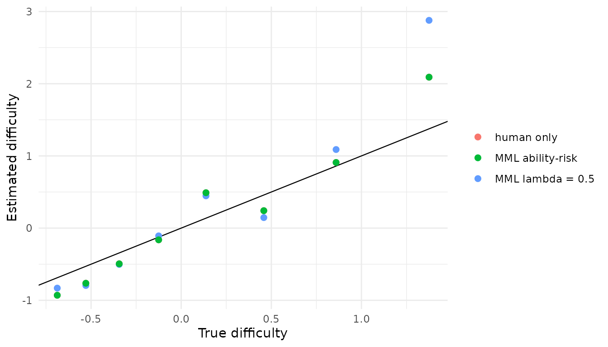

Mixed-Subjects IRT Calibration
mixed-subjects-workflow.RmdThis vignette shows the recommended mixed-subjects workflow for a
unidimensional 2PL model using the marginal maximum-likelihood
PPI++ estimator (fit_mixed_subjects_mml). The
package expects three response matrices with the same item columns:
-
observed: binary human responses. -
predicted: LLM responses or probabilities for the same human rows. -
generated: additional generated or unlabeled LLM responses.
The fitted objective is
where each $L^\\mathrm{marg}$ is the true IRT marginal negative log-likelihood, with posteriors recomputed from the current candidate $\\gamma$ at every gradient step. Setting $\\lambda = 0$ recovers the human-only MML calibration. See the Choosing Lambda vignette for the scientific background on why the marginal-MML objective is preferred over the older frozen expected-count estimator.
Simulate example data
library(mixedsubjectsirt)
library(ggplot2)
set.seed(2026)
n_human <- 400
n_generated <- 1200
n_items <- 8
true_pars <- data.frame(
item = paste0("Item", seq_len(n_items)),
a = seq(0.8, 1.6, length.out = n_items),
d = seq(-1.1, 1.1, length.out = n_items)
)
true_pars$b <- -true_pars$d / true_pars$a
theta_human <- rnorm(n_human)
observed <- simulate_2pl(theta_human, true_pars)
# LLM with ~10% attenuated discrimination and a small intercept shift
llm_pars <- true_pars
llm_pars$a <- pmax(0.4, 0.9 * true_pars$a + rnorm(n_items, 0, 0.05))
llm_pars$d <- true_pars$d + 0.25 + rnorm(n_items, 0, 0.15)
llm_pars$b <- -llm_pars$d / llm_pars$a
predicted <- simulate_2pl(theta_human, llm_pars)
generated <- simulate_2pl(rnorm(n_generated), llm_pars)Step 2: Fit the marginal-MML mixed-subjects model
fit_mixed_subjects_mml() recomputes posterior weights at
every gradient evaluation, eliminating the frozen-posterior gradient
asymmetry that causes the older fit_mixed_subjects() to
inflate item discriminations when the LLM parameters differ from the
human calibration.
mixed_mml <- fit_mixed_subjects_mml(
observed = observed,
predicted = predicted,
generated = generated,
lambda = 0.5,
initial_pars = human_start$pars,
n_quad = 11
)
mixed_mml
#> mixedsubjectsirt 2PL fit
#> items: 8
#> lambda: 0.5
#> loss: 4.78863
#> convergence: 0
#> estimator: marginal MML PPI++
mixed_mml$item_pars
#> item a d b
#> 1 Item1 0.3892905 -1.1201778 2.8774858
#> 2 Item2 0.7835246 -0.8527486 1.0883495
#> 3 Item3 0.7887476 -0.1147950 0.1455409
#> 4 Item4 0.7234563 -0.3232715 0.4468431
#> 5 Item5 1.0983294 0.1180605 -0.1074910
#> 6 Item6 1.1514876 0.5788988 -0.5027399
#> 7 Item7 0.9533489 0.7575978 -0.7946700
#> 8 Item8 1.6982913 1.4114240 -0.8310847Step 3: Select lambda by ability-score risk
tune_lambda_ability_risk() with
fit_fn = fit_mixed_subjects_mml evaluates candidates on the
MML objective and selects the
that minimises propagated ability-score risk
,
where
is the Louis-corrected marginal sandwich
covariance.
ability_tuned <- tune_lambda_ability_risk(
lambda_grid = seq(0, 1, by = 0.2),
observed = observed,
predicted = predicted,
generated = generated,
target_resp = observed,
initial_pars = human_start$pars,
fit_fn = fit_mixed_subjects_mml,
n_quad = 11,
control = list(maxit = 200)
)
ability_tuned$summary
#> lambda mean_param_var mean_squared_error mean_total_risk convergence
#> 1 0.0 0.01468912 NA 0.01468912 0
#> 2 0.2 0.01654963 NA 0.01654963 0
#> 3 0.4 0.02039017 NA 0.02039017 0
#> 4 0.6 0.02684917 NA 0.02684917 0
#> 5 0.8 0.03711546 NA 0.03711546 0
#> 6 1.0 0.05370607 NA 0.05370607 0
#> selection_risk
#> 1 0.01468912
#> 2 0.01654963
#> 3 0.02039017
#> 4 0.02684917
#> 5 0.03711546
#> 6 0.05370607
ability_tuned$best_lambda
#> [1] 0When the LLM parameters differ substantially from the human
calibration the ability-risk criterion correctly selects
,
recovering the human-only estimate. The selection_risk
column shows Inf for any candidate that failed to converge,
so the selection is protected against numerical failures.
Step 4: Inspect the covariance
vcov() on a scalar-lambda MML fit automatically uses
vcov_mixed_subjects_mml(), which applies Louis’ (1982)
observed-information correction — the marginal bread is
rather than the EM complete-data Hessian alone.
Compare calibrations
human_only <- fit_mixed_subjects_mml(
observed = observed,
predicted = predicted,
generated = generated,
lambda = 0,
initial_pars = human_start$pars,
n_quad = 11
)
estimates <- rbind(
data.frame(estimator = "human only", human_only$item_pars),
data.frame(estimator = "MML lambda = 0.5", mixed_mml$item_pars),
data.frame(estimator = "MML ability-risk",
ability_tuned$best_fit$item_pars)
)
estimates$true_b <- true_pars$b[match(estimates$item, true_pars$item)]
estimates$true_a <- true_pars$a[match(estimates$item, true_pars$item)]
ggplot(estimates, aes(true_b, b, colour = estimator)) +
geom_abline(slope = 1, intercept = 0, linewidth = 0.4) +
geom_point(size = 2) +
labs(x = "True difficulty", y = "Estimated difficulty", colour = NULL) +
theme_minimal()
When the LLM is a good predictor
To verify that the method selects
when the LLM genuinely helps, simulate with
predicted = observed (F = Y, the perfect paired
predictor):
tuned_fy <- tune_lambda_ability_risk(
lambda_grid = seq(0, 1, by = 0.2),
observed = observed,
predicted = observed, # F = Y: perfect paired predictor
generated = simulate_2pl(rnorm(n_generated), true_pars),
target_resp = observed,
initial_pars = human_start$pars,
fit_fn = fit_mixed_subjects_mml,
n_quad = 11,
control = list(maxit = 200)
)
tuned_fy$best_lambda # expect > 0, near N/(n+N) = 0.75
#> [1] 0.8
tuned_fy$summary[, c("lambda", "mean_param_var", "convergence")]
#> lambda mean_param_var convergence
#> 1 0.0 0.014689121 0
#> 2 0.2 0.009595393 0
#> 3 0.4 0.006101125 0
#> 4 0.6 0.004169105 0
#> 5 0.8 0.003813351 0
#> 6 1.0 0.005118509 0The ability risk decreases from to a minimum near the theoretical upper bound , confirming the estimator correctly identifies and exploits a highly informative predictor.